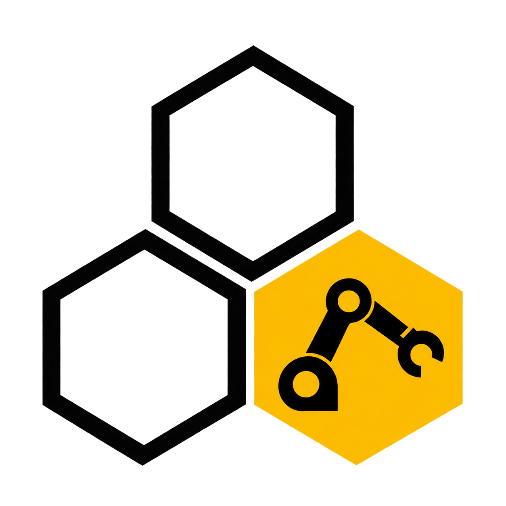

RoboCellStudioYOUR PROCESS, YOUR SPACE
공정의 다음 판단을
준비하고 있어요.
조건을 정리하고, 여러 개선안을 비교할
기업별 작업 공간이 곧 이어집니다.
NEXT STEPS
- 01공정 조건 등록
- 02시뮬레이션 진행
- 03결과 비교
COMPANY WORKSPACE
작업 공간 확인 중
로그인한 계정과 기업 정보를 확인하고 있습니다.
잠시만 기다려 주세요.
다음 단계
공정 조건 등록 화면
공정 조건 등록과 요청 상태 확인 기능은 다음 구현 단계에서 연결됩니다.